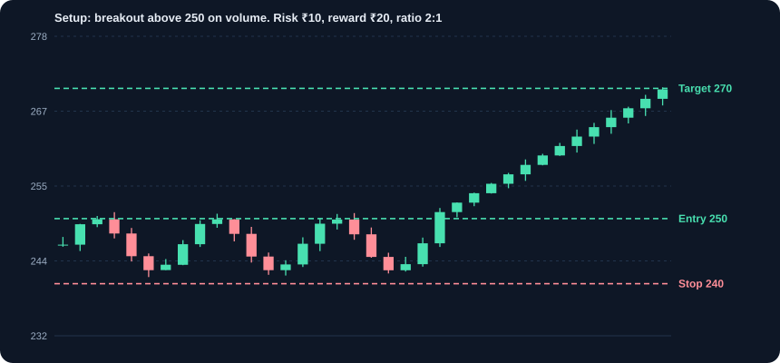
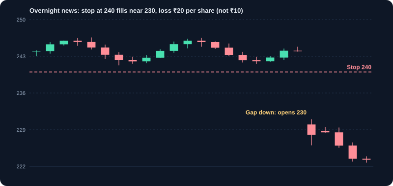

स्विंग ट्रेडिंग
साफ़ सेटअप, एंट्री-एग्ज़िट नियम और ट्रेड जर्नल से कुछ दिनों से कुछ हफ़्तों तक ट्रेड रखें।
1. स्विंग ट्रेडिंग क्या है
स्विंग ट्रेडिंग कीमत की एक चाल पकड़ने के लिए पोज़िशन कुछ दिनों से कुछ हफ़्तों तक रखती है। यह इंट्राडे (उसी दिन) और निवेश (महीने या साल) के बीच आता है। यह उन लोगों के लिए उपयुक्त है जिनकी नौकरी है और जो दिन में एक-दो बार बाज़ार देख सकते हैं, पर इसके लिए धैर्य, साफ़ योजना और जर्नल चाहिए।
2. ट्रेड को कितना समय देना है
स्विंग ट्रेड न निवेश है, न डे ट्रेड। आप सेटअप के कारण एंट्री करते हैं, और अधिकतम समय पहले से तय करते हैं। अगर ट्रेड उस समय में नहीं चलता, तो सेटअप विफल है, और छोटे नुकसान में भी बाहर निकलते हैं। घाटे वाला ट्रेड महीनों तक रखना एक अलग रणनीति है, और आमतौर पर वह ग़लत जाती है।
- आमतौर पर होल्डिंग अवधि: एंट्री से पहले तय 3 से 20 सत्र।
- रात भर होल्डिंग: गैप स्टॉप से बहुत दूर खुल सकते हैं, इसलिए पोज़िशन साइज़ में इसका हिसाब हो।
- बाज़ार समय: दैनिक चार्ट पर बंद होने के बाद योजना बनाएँ, और अगले सत्र के लिए ऑर्डर दें।
3. सेटअप: एंट्री के कारण
सेटअप एक दोहराने योग्य स्थिति है, जिसका साफ़ नियम हो। आम स्विंग सेटअप: वॉल्यूम के साथ रेज़िस्टेंस के ऊपर ब्रेकआउट, अपट्रेंड में बढ़ते मूविंग एवरेज तक पुलबैक, सपोर्ट पर तेज़ी का पलटाव कैंडल, और स्क्वीज़ के बाद रेंज ब्रेकआउट। हर सेटअप को नियम के रूप में लिखें, जैसे: अपट्रेंड (कीमत 50-दिन एवरेज के ऊपर) में, वॉल्यूम औसत के 1.5 गुना के साथ 20-दिन के हाई के ऊपर क्लोज़।
4. एंट्री, स्टॉप और टारगेट: पूरी योजना
- एंट्री: वह कीमत या शर्त जो ट्रेड शुरू करे, जैसे ₹250 के ऊपर क्लोज़।
- स्टॉप-लॉस: वह स्तर जहाँ विचार ग़लत साबित होता है, जैसे ₹240 पर पिछले स्विंग लो के नीचे। एंट्री से पहले लगाएँ।
- टारगेट: वह स्तर जहाँ मुनाफ़ा लेंगे, जैसे ₹270 पर पिछला रेज़िस्टेंस, या जोखिम का गुणक।
- जोखिम-इनाम: (टारगेट − एंट्री) ÷ (एंट्री − स्टॉप)। उदाहरण: (270 − 250) ÷ (250 − 240) = 2। कई ट्रेडर कम से कम 2 चाहते हैं।
5. पोज़िशन साइज़: सबसे महत्वपूर्ण संख्या
तय करें कि एक ट्रेड में अधिकतम कितना नुकसान स्वीकार है, आमतौर पर पूँजी का 0.5% से 2%। पोज़िशन का आकार स्टॉप की दूरी से तय होता है, इस भावना से नहीं कि आप कितने आश्वस्त हैं।
उदाहरण: पूँजी ₹1,00,000, जोखिम 1% = ₹1,000। एंट्री ₹250, स्टॉप ₹240। प्रति शेयर जोखिम ₹10। शेयर = 1,000 ÷ 10 = 100। पोज़िशन का मूल्य ₹25,000 (पूँजी का 25%)। स्टॉप नुकसान को शुल्क और किसी गैप से पहले लगभग ₹1,000 तक सीमित रखता है।
6. एंट्री के बाद ट्रेड प्रबंधन
एंट्री के बाद योजना तय करती है कि आप क्या करें, भावना नहीं। स्टॉप तभी ऊपर ले जाएँ जब ट्रेड खुद को साबित करे, जैसे कीमत आपके जोखिम जितनी चलने पर ब्रेक-ईवन पर। चाहें तो पहले टारगेट पर आंशिक मुनाफ़ा लें, और बाक़ी को ट्रेलिंग स्टॉप के साथ चलने दें। नुकसान से बचने के लिए स्टॉप कभी चौड़ा न करें।
- प्रारंभिक जोखिम जितनी चाल पर ब्रेक-ईवन पर जाएँ (उदाहरण: ₹10 जोखिम पर +₹10)।
- ऊँचे स्विंग लो के नीचे, या मूविंग एवरेज के नीचे स्टॉप ट्रेल करें।
- अगर ट्रेड समय सीमा में कहीं नहीं पहुँचा तो समय सीमा पर बाहर निकलें।
7. गैप: वह जोखिम जो स्टॉप तोड़ता है
गैप तब होता है जब कीमत पिछले क्लोज़ से काफ़ी ऊपर या नीचे खुलती है, आमतौर पर ख़बर के बाद। स्टॉप कीमत पर बाहर निकलने का ऑर्डर है, पर गैप में पहली उपलब्ध कीमत कहीं बदतर हो सकती है। उदाहरण: ₹240 पर स्टॉप, बुरी ख़बर, शेयर ₹230 पर खुला। प्रति शेयर नुकसान ₹20 है, योजना के ₹10 का दोगुना। नतीजे, बजट और नीति घोषणाओं जैसी घटनाओं से पहले पोज़िशन घटाएँ।
8. सेक्टर और बाज़ार का संदर्भ
कमज़ोर सेक्टर या गिरते बाज़ार में अच्छा शेयर भी अक्सर विफल होता है। एंट्री से पहले इंडेक्स और सेक्टर का ट्रेंड जाँचें। मज़बूत सेक्टरों और व्यापक बाज़ार के साथ चलने वाले स्विंग ट्रेडर अकेले शेयर में ट्रेड करने वालों से अक्सर बेहतर सफलता दर रखते हैं।
9. स्विंग ट्रेडिंग जर्नल
सेटअप, कारण, तारीख़, एंट्री, स्टॉप, टारगेट, साइज़, एग्ज़िट, रुपये में नतीजा और R में नतीजा (जोखिम के गुणक), और कोई गलती लिखें। महीने में एक बार समीक्षा करें। आम खोज: कुछ सेटअप आपके लिए काम नहीं करते, एग्ज़िट बहुत जल्दी आते हैं, और स्टॉप योजना के ख़िलाफ़ खिसकते हैं।
10. शुरू से अंत तक एक उदाहरण
एक शेयर 20-दिन के हाई से ऊपर ₹250 पर वॉल्यूम औसत के 1.5 गुना के साथ, अपट्रेंड में, क्लोज़ होता है। आप ₹250 पर 100 शेयर ख़रीदते हैं, स्टॉप ₹240 और टारगेट ₹270 पर। तीन दिन बाद कीमत ₹262 पहुँचती है; आप स्टॉप ₹250 (ब्रेक-ईवन) पर ले जाते हैं। दो दिन बाद कीमत ₹250 पर लौटती है और आप बाहर निकलते हैं। नुकसान: शुल्क से पहले 0। अगला सेटअप: एक और ब्रेकआउट। उदाहरण दिखाता है कि ट्रेड उम्मीद के उलट जाए तब भी स्टॉप खाते की रक्षा करता है।
11. आम स्विंग ट्रेडिंग गलतियाँ
- सेटअप मज़बूत लगने पर बिना स्टॉप के एंट्री।
- कीमत स्टॉप के पास आते ही उसे और दूर खिसकाना।
- बिना फ़ैसले के नतीजों (results) के दौरान होल्ड करना।
- घाटे वाली पोज़िशन में औसत बढ़ाने के लिए और ख़रीदना।
- एक साथ बहुत सारे सेटअप लेना, जिससे सबसे अच्छे के लिए पूँजी न बचे।
13. स्विंग रणनीतियाँ: ख़रीद और बिक्री के नियम
नीचे हर रणनीति के तीन हिस्से हैं: बाज़ार की कौन सी स्थिति उपयुक्त है, कैसे ख़रीदें, और कैसे बेचें (स्टॉप-लॉस और लाभ का टारगेट)। एक समय में एक रणनीति इस्तेमाल करें और ट्रेड से पहले नियम लिख लें। नतीजे केवल उदाहरण हैं, वादा नहीं।
रणनीति 1: ब्रेकआउट ख़रीद
जब कीमत औसत से ज़्यादा वॉल्यूम पर किसी साफ़ रेज़िस्टेंस के ऊपर क्लोज़ करे, तब ख़रीदें। अपट्रेंड में या समेकन (consolidation) के बाद सबसे अच्छा।
- ख़रीद: 20-दिन के औसत वॉल्यूम के कम से कम 1.5 गुना वॉल्यूम के साथ रेज़िस्टेंस (जैसे ₹250) के ऊपर क्लोज़।
- स्टॉप-लॉस: ब्रेकआउट कैंडल के लो के ठीक नीचे या पिछले स्विंग लो के नीचे (जैसे ₹240)।
- टारगेट: समेकन की ऊँचाई को ब्रेकआउट में जोड़ें, या अगला रेज़िस्टेंस (जैसे ₹270)। जोखिम-इनाम कम से कम 1:2 हो।
- जल्दी बेचें यदि: 2 दिन के भीतर कीमत ब्रेकआउट स्तर के नीचे क्लोज़ हो। विफल ब्रेकआउट एग्ज़िट संकेत है।
उदाहरण: शेयर औसत के 2 गुना वॉल्यूम पर ₹250 के ऊपर टूटता है। ₹250 पर 100 शेयर ख़रीदें, स्टॉप ₹240 (जोखिम ₹1,000)। टारगेट ₹270 (इनाम ₹2,000)। तीन दिन बाद क्लोज़ ₹266; स्टॉप ₹250 (ब्रेक-ईवन) पर ले जाएँ और टारगेट तक रखें।
यह क्यों काम करता है
जो कीमत किसी स्तर के नीचे अटकी हो, वह ऊर्जा जमा करती है। वॉल्यूम के साथ उसके ऊपर क्लोज़ दिखाता है कि ख़रीदारों ने उस स्तर पर नियंत्रण ले लिया है।
ख़रीदने से पहले चेकलिस्ट
- रेज़िस्टेंस साफ़ हो और कम से कम दो बार परखा गया हो
- ब्रेकआउट पर वॉल्यूम औसत के कम से कम 1.5 गुना हो
- व्यापक बाज़ार और सेक्टर न गिर रहे हों
- ऑर्डर से पहले स्टॉप और टारगेट लिख लिए हों
पोज़िशन साइज़ का उदाहरण
पूँजी ₹1,00,000, जोखिम 1%। एंट्री ₹250, स्टॉप ₹240 (प्रति शेयर ₹10)। शेयर = 1,000 ÷ 10 = 100। पोज़िशन मूल्य ₹25,000।
रणनीति 2: बढ़ते मूविंग एवरेज तक पुलबैक
मज़बूत अपट्रेंड में गिरावट पर ख़रीदें, जब कीमत बढ़ते मूविंग एवरेज तक लौटे और ख़रीदारी दिखाए। ब्रेकआउट ख़रीदने से यह बेहतर कीमत देता है।
- ट्रेंड जाँच: कीमत बढ़ते 50-दिन एवरेज के ऊपर; 20-दिन एवरेज 50-दिन के ऊपर।
- ख़रीद: कीमत 20-दिन के EMA को छुए या उसके पास आए और तेज़ी वाली कैंडल (हैमर या एंगल्फ़िंग) बने, RSI लगभग 40 से 50 के बीच से ऊपर मुड़े।
- स्टॉप-लॉस: 50-दिन एवरेज या पुलबैक के लो के नीचे।
- बिक्री: पिछले स्विंग हाई पर, या हर नए हायर लो के नीचे स्टॉप ट्रेल करें।
उदाहरण: अपट्रेंड में कीमत ₹248 (20-दिन EMA) तक गिरती है और तेज़ी वाली एंगल्फ़िंग कैंडल बनाती है। ₹249 पर ख़रीदें, स्टॉप ₹243 (50-दिन एवरेज के नीचे), टारगेट पिछला हाई ₹262 (जोखिम ₹6, इनाम ₹13)।
यह क्यों काम करता है
स्वस्थ अपट्रेंड में कीमत आगे बढ़ने से पहले अक्सर बढ़ते एवरेज तक लौटती है। वहाँ ख़रीदने से ब्रेकआउट का पीछा करने से बेहतर कीमत और पास का स्टॉप मिलता है।
ख़रीदने से पहले चेकलिस्ट
- कीमत बढ़ते 50-दिन एवरेज के ऊपर हो
- 20-दिन एवरेज 50-दिन एवरेज के ऊपर हो
- पुलबैक व्यवस्थित हो, कम वॉल्यूम पर
- तेज़ी वाली कैंडल या RSI का मुड़ना उछाल की पुष्टि करे
पोज़िशन साइज़ का उदाहरण
एंट्री ₹249, स्टॉप ₹243 (जोखिम ₹6)। ₹1,000 जोखिम पर शेयर = 1,000 ÷ 6 ≈ 166। टारगेट ₹262 (इनाम ₹13) लगभग 2.2 गुना।
रणनीति 3: सपोर्ट पर पलटाव की पुष्टि
गिरावट के बाद अच्छी तरह परखे गए सपोर्ट स्तर पर ख़रीदें, पर केवल साफ़ पलटाव संकेत के बाद। रेंज वाले शेयरों और ट्रेंड के निचले स्तर दोनों पर काम करता है।
- स्तर: सपोर्ट (जैसे ₹240) की कम से कम दो बार परख, हर परख पर वॉल्यूम घटता हुआ।
- ख़रीद: सपोर्ट पर तेज़ी वाली पलटाव कैंडल, और उसके बाद उसके हाई के ऊपर क्लोज़।
- स्टॉप-लॉस: सपोर्ट के ठीक नीचे (जैसे ₹237)।
- बिक्री: रेंज के मध्य या रेज़िस्टेंस (जैसे ₹255) पर। वॉल्यूम के साथ सपोर्ट टूटे तो बाहर निकलें।
यह क्यों काम करता है
जो स्तर कई बार टिका हो, वह दिखाता है कि ख़रीदार उसका बचाव कर रहे हैं। वहाँ पलटाव कैंडल बताता है कि अभी बचाव काम कर रहा है।
ख़रीदने से पहले चेकलिस्ट
- सपोर्ट कम से कम दो बार टिका हो
- हर परख पर वॉल्यूम घटे
- पलटाव कैंडल अपने हाई के ऊपर क्लोज़ हो
- स्टॉप सपोर्ट के नीचे हो, रेंज के अंदर नहीं
पोज़िशन साइज़ का उदाहरण
एंट्री ₹241, स्टॉप ₹237 (जोखिम ₹4)। ₹1,000 जोखिम पर शेयर = 250। टारगेट ₹255 (इनाम ₹14) लगभग 3.5 गुना।
रणनीति 4: ट्रेंड-फ़ॉलोइंग एग्ज़िट (बिक्री के नियम)
कई स्विंग ट्रेडर तय टारगेट के बजाय ट्रेंड टूटने तक रुकते हैं। इससे बड़ी चालें पकड़ी जाती हैं, पर बिक्री का साफ़ नियम चाहिए।
- ट्रेलिंग स्टॉप: हर नए हायर लो के नीचे स्टॉप ऊपर ले जाएँ।
- मूविंग-एवरेज एग्ज़िट: 20-दिन EMA के ऊपर रहने के बाद उसके नीचे क्लोज़ होने पर बेचें।
- समय एग्ज़िट: यदि तय अवधि (जैसे 15 सत्र) में ट्रेड टारगेट की ओर नहीं गया, तो बेचें और समीक्षा करें।
- स्टॉप कभी नीचे न खिसकाएँ। केवल ऊपर ले जाएँ या वैसा ही रखें।
यह क्यों काम करता है
तय टारगेट विजेता ट्रेड को जल्दी काट सकते हैं। ट्रेलिंग स्टॉप ट्रेंड को चलने देता है और कीमत के नीचे बढ़ती मंज़िल तय करता है।
ख़रीदने से पहले चेकलिस्ट
- ट्रेंड साफ़ हो (ऊँचे हाई और ऊँचे लो)
- हर नया स्टॉप ताज़ा हायर लो के नीचे हो
- स्टॉप कभी नीचे न खिसके
- ट्रेंड रुकने की स्थिति में समय सीमा तय हो
पोज़िशन साइज़ का उदाहरण
एंट्री ₹110, शुरुआती स्टॉप ₹104 (जोखिम ₹6)। हर हायर लो स्टॉप ऊपर ले जाता है, इसलिए ट्रेंड जारी रहने पर लाभ सुरक्षित होता है।
रणनीति 5: बिक्री पक्ष (शॉर्ट) स्विंग ट्रेड
स्विंग ट्रेडिंग में शॉर्ट सेलिंग का मतलब है ऐसे शेयर बेचना जो आपके पास नहीं, इस उम्मीद में कि कीमत गिरेगी। भारत में शॉर्ट सेलिंग अनुमत शेयरों और उत्पादों तक सीमित है, और ब्रोकर मार्जिन नियम लगाते हैं। इसे केवल तब इस्तेमाल करें जब नियम और असीमित नुकसान के जोखिम की समझ हो।
- सेटअप: मंदी के ट्रेंड में वॉल्यूम के साथ सपोर्ट के नीचे ब्रेकडाउन, या रेज़िस्टेंस पर बियरिश पलटाव।
- स्टॉप-लॉस: टूटे सपोर्ट के ठीक ऊपर, या हाल के स्विंग हाई के ऊपर।
- टारगेट: अगला सपोर्ट स्तर, जिसमें इनाम जोखिम का कम से कम दोगुना हो।
- ट्रेड से पहले जाँचें कि शेयर शॉर्ट योग्य है, और मार्जिन व सेटलमेंट नियम समझें।
यह क्यों काम करता है
वॉल्यूम के साथ सपोर्ट के नीचे टूटना दिखाता है कि विक्रेताओं ने वह स्तर पार कर लिया है जिसे ख़रीदार पहले बचाते थे। शॉर्ट सेलिंग इसी सपोर्ट की विफलता से लाभ लेती है।
ख़रीदने से पहले चेकलिस्ट
- इस शेयर में शॉर्ट सेलिंग अनुमत हो
- मार्जिन और सेटलमेंट नियम समझे हों
- ब्रेकडाउन वॉल्यूम के साथ हो, पतले दिन पर नहीं
- स्टॉप टूटे सपोर्ट के ठीक ऊपर हो
पोज़िशन साइज़ का उदाहरण
एंट्री ₹240, स्टॉप ₹246 (जोखिम ₹6)। कीमत बढ़ी तो नुकसान असीमित हो सकता है, इसलिए सख़्त स्टॉप रखें और साइज़ छोटा रखें।
स्विंग रणनीति कैसे चुनें
- साफ़ अपट्रेंड वाला बाज़ार: बढ़ते एवरेज पर पुलबैक (रणनीति 2) या ब्रेकआउट (रणनीति 1)।
- रेंज वाला बाज़ार: सपोर्ट पर पलटाव (रणनीति 3), रेज़िस्टेंस के पास बेचना।
- पहले से चलता मज़बूत ट्रेंड: जीत को बनाए रखने के लिए ट्रेंड-फ़ॉलोइंग एग्ज़िट (रणनीति 4)।
- गिरता बाज़ार जिसमें ब्रेकडाउन हो: शॉर्ट सेटअप (रणनीति 5), केवल तब जब अनुमति हो और समझ हो।
आम स्विंग रणनीति गलतियाँ
- ऐसा ब्रेकआउट ख़रीदना जो स्तर से 5% आगे निकल चुका हो, जिससे स्टॉप तक जगह कम बचे।
- औसत के नीचे स्टॉप लगाए बिना पुलबैक एंट्री लेना।
- टारगेट पर पहुँचने पर टारगेट और ऊपर खिसकाना, बजाय मुनाफ़ा लेने या स्टॉप ट्रेल करने के।
- पाँचों रणनीतियाँ एक साथ इस्तेमाल करना। एक चुनें, परखें, और नतीजों का जर्नल रखें।
चार्ट और चित्र


कार्य उदाहरण
एक पूरा स्विंग ट्रेड
₹250 का शेयर रेज़िस्टेंस तोड़ता है। एंट्री ₹250, स्टॉप ₹240, टारगेट ₹270। जोखिम प्रति शेयर ₹10, इनाम ₹20, अनुपात 2:1। 100 शेयर पर: टारगेट लगे तो लाभ ≈ ₹2,000 (₹1 लाख पूँजी का 2%)। स्टॉप लगे तो नुकसान ≈ ₹1,000 (1%)।
कई ट्रेडों में अपेक्षित मूल्य (expectancy)
जीत दर 40%, औसत जीत 2R, औसत नुकसान 1R (R = नियोजित जोखिम)। Expectancy = 0.4 × 2 − 0.6 × 1 = प्रति ट्रेड +0.2R। अगर विजेता ट्रेड हारने वालों से बड़े हों, तो 50% से कम जीत दर पर भी सिस्टम लाभदायक हो सकता है।
वास्तविक परिस्थितियाँ
गैप डाउन होकर स्टॉप से नीचे
आपने ₹240 के स्टॉप के साथ पोज़िशन रात भर रखी। बुरी ख़बर से शेयर ₹230 पर खुलता है। आपका स्टॉप लगभग ₹230 पर पूरा होता है, इसलिए प्रति शेयर नुकसान ₹20 (2%) है, नियोजित ₹10 (1%) नहीं। पोज़िशन साइज़ तय करते समय गैप का जोखिम भी मानें।
दो हफ़्ते बाज़ार बिना दिशा के
शेयर दस सत्रों तक तंग रेंज में घूमता है और टारगेट नहीं छूता। समय की भी कीमत होती है। पहले से तय करें कि जो ट्रेड नहीं चलता, उसे कितने दिन रखेंगे।
उपयोग के मामले
- स्थापित ट्रेंड में बढ़ते मूविंग एवरेज तक पुलबैक पर ट्रेड करना।
- नतीजों के मौसम में ट्रेड, गैप जोखिम के लिए पोज़िशन छोटी रखकर।
- सेक्टर रोटेशन: सबसे मज़बूत सेक्टर के अग्रणी शेयर कुछ हफ़्तों तक ख़रीदना।
मुख्य बातें
- एंट्री से पहले सेटअप, एंट्री, स्टॉप और टारगेट लिख लें।
- पोज़िशन साइज़ स्टॉप की दूरी से तय करें, अनुमान से नहीं।
- कोई तरीका उपयोगी है या नहीं, यह अकेली जीत दर नहीं, expectancy बताती है।
- हर ट्रेड की जर्नल में समीक्षा करें ताकि पता चले कि असल में क्या काम करता है।
मुख्य शब्द, समझाए गए
- स्विंग ट्रेडिंग
- कीमत की एक चाल पकड़ने के लिए ट्रेड को कुछ दिनों से हफ़्तों तक रखना।
- जोखिम-इनाम अनुपात
- किसी ट्रेड के संभावित लाभ की उसके संभावित नुकसान से तुलना। 1:2 का मतलब हर ₹1 जोखिम पर ₹2 इनाम।
- पोज़िशन साइज़िंग
- आपके स्वीकार्य अधिकतम नुकसान और स्टॉप की दूरी के आधार पर तय करना कि कितने शेयर ख़रीदें।
- स्टॉप-लॉस ऑर्डर
- कीमत तय स्तर पर पहुँचने पर बदलने वाला ऑर्डर, जो नुकसान सीमित करता है। उसी स्तर पर पूरा होने की गारंटी नहीं।
- ब्रेकआउट
- कीमत का रेज़िस्टेंस के ऊपर या सपोर्ट के नीचे साफ़ निकलना, अक्सर ज़्यादा वॉल्यूम के साथ।
- ड्रॉडाउन
- खाते या कीमत में एक शिखर से बाद के निचले स्तर तक की गिरावट, प्रतिशत में।
सीखने वालों के सामान्य प्रश्न
स्विंग ट्रेड कितने समय तक रखना चाहिए?
आमतौर पर सेटअप के अनुसार कुछ दिन से कुछ हफ़्ते। एंट्री से पहले अधिकतम होल्डिंग अवधि तय करें, और उस समय में ट्रेड न चले तो बाहर निकलें।
अगर रात में कीमत मेरे स्टॉप से आगे गैप कर जाए तो?
बाहर निकलना आपके स्टॉप से काफ़ी नीचे हो सकता है, इसलिए नुकसान योजना से बड़ा हो सकता है। रात भर रखे ट्रेड पर पोज़िशन छोटी रखें, और यह गैप जोखिम स्वीकार करें।
शुरू करने के लिए कितनी पूँजी चाहिए?
इतनी कि प्रति ट्रेड 1% जोखिम पर एक ऐसी पोज़िशन बने जिसे आप संभाल सकें। बहुत कम पूँजी में लागत और स्टॉप की दूरी ठीक से संभालना मुश्किल होता है।
केवल शैक्षिक सामग्री, निवेश सलाह नहीं। बाज़ार में जोखिम होता है, जिसमें पूँजी खोने का जोखिम भी शामिल है। उदाहरण सरल किए गए हैं और इनमें शुल्क, टैक्स या स्लिपेज शामिल नहीं हो सकते।